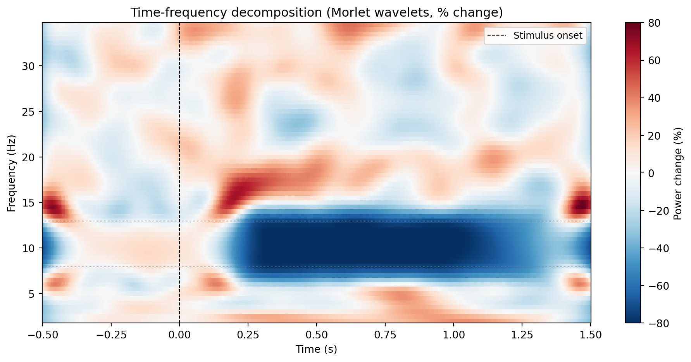

import mne
import numpy as np
# Load data and create epochs
raw = mne.io.read_raw_edf("recording.edf", preload=True)
raw.filter(l_freq=0.5, h_freq=45.0)
events = mne.find_events(raw)
epochs = mne.Epochs(raw, events, tmin=-0.5, tmax=1.5, baseline=None,
preload=True)
# Define frequencies of interest
freqs = np.arange(4, 40, 1) # 4 to 39 Hz in 1 Hz steps
n_cycles = freqs / 2.0 # adaptive: more cycles at higher frequencies
# Compute time-frequency representation
tfr = epochs.compute_tfr(method="morlet", freqs=freqs, n_cycles=n_cycles,
return_itc=False, average=True)
# tfr is an AverageTFR object: shape (n_channels, n_freqs, n_times)Time-frequency decomposition
spectral
time-frequency
Why PSD loses temporal information, Morlet wavelets, multitaper method, computing time-frequency representations with MNE, plotting time-frequency maps, baseline correction, and event-related spectral perturbation (ERSP).
Why this topic matters
PSD tells you how much power sits at each frequency, averaged over the entire recording (or over a long segment). But the brain’s spectral profile is not static. Alpha power increases when you close your eyes and decreases when you open them. Beta power drops just before a movement and rebounds afterwards. Gamma bursts last only tens of milliseconds. If you average over these changes, you lose them entirely.
Time-frequency decomposition solves this problem by estimating power at each frequency and each time point simultaneously. Instead of a one-dimensional PSD curve, you get a two-dimensional map with time on the x-axis and frequency on the y-axis. Colour indicates power. These maps reveal the temporal dynamics of oscillatory activity that PSD cannot capture.
The intuition: trading resolution
The fundamental challenge in time-frequency analysis is the uncertainty principle: you cannot have perfect resolution in both time and frequency simultaneously. A short analysis window gives you good temporal resolution (you know when something happened) but poor frequency resolution (you cannot tell apart nearby frequencies). A long window gives you good frequency resolution but poor temporal resolution.
Every time-frequency method navigates this trade-off differently. The two most common approaches in EEG research are Morlet wavelets and the multitaper method.
Morlet wavelets
A Morlet wavelet is a short sinusoidal oscillation multiplied by a Gaussian envelope. It looks like a brief burst of a particular frequency, which makes it a natural tool for detecting oscillatory bursts in neural data.
The wavelet for frequency \(f_0\) is:
\[w(t, f_0) = A \, \exp\!\left(-\frac{t^2}{2\sigma_t^2}\right) \exp(i \, 2\pi f_0 \, t)\]
where \(\sigma_t\) controls the width of the Gaussian envelope. The number of cycles \(n\) in the wavelet is related to \(\sigma_t\) by \(n = 2\pi f_0 \sigma_t\). This parameter controls the time-frequency trade-off:
- Fewer cycles (e.g., \(n = 3\)): the wavelet is short, giving good temporal resolution but poor frequency resolution. Good for detecting brief events.
- More cycles (e.g., \(n = 7\)): the wavelet is longer, giving better frequency resolution at the cost of temporal precision. Good for sustained oscillations.
A common choice is \(n = 7\) for frequencies above 8 Hz and fewer cycles for lower frequencies. Some researchers use a linearly increasing number of cycles (e.g., \(n\) proportional to frequency), so that relative frequency resolution is constant across the spectrum.
How the computation works
Time-frequency decomposition with wavelets involves convolving the signal with each wavelet. At each time point, you slide the wavelet along the signal, compute the dot product, and record the result. The squared magnitude of the result gives the instantaneous power at that frequency and time point.
In practice, the convolution is done in the frequency domain (multiply FFTs, then inverse FFT) because it is much faster.
The multitaper method
The multitaper method (Thomson, 1982) takes a different approach. Instead of using a single window at each time point, it uses several orthogonal tapers (typically discrete prolate spheroidal sequences, or DPSS tapers) and averages the spectra across tapers. This reduces spectral leakage and variance at the cost of some frequency resolution.
For time-frequency analysis, the multitaper method is applied to short, overlapping time windows (similar to short-time Fourier transform, but with multiple tapers per window). MNE implements this via tfr_multitaper().
The multitaper method is particularly useful when you need reliable power estimates and are willing to sacrifice some frequency resolution. It tends to produce smoother time-frequency maps than the wavelet approach.
Computing time-frequency representations in MNE
MNE provides two main functions for time-frequency decomposition:
Using Morlet wavelets
The n_cycles parameter controls the time-frequency trade-off. Setting n_cycles = freqs / 2.0 means that each wavelet has a duration of half a cycle per Hz, which gives a good balance for most EEG data.
Using the multitaper method
# Multitaper time-frequency
tfr_mt = epochs.compute_tfr(method="multitaper", freqs=freqs,
n_cycles=n_cycles, return_itc=False,
average=True, time_bandwidth=4.0)The time_bandwidth parameter controls the spectral smoothing. Higher values give more smoothing (more tapers, smoother estimates) at the cost of frequency resolution. A value of 4.0 is a common default.
Plotting time-frequency maps
# Basic TFR plot for a single channel
tfr.plot(picks="Cz", baseline=(-0.5, 0), mode="percent",
title="Time-frequency: Cz")
# Topographic TFR plot (scalp maps at selected time-frequency windows)
tfr.plot_topo(baseline=(-0.5, 0), mode="percent")
# Joint plot: TFR + topographies at selected times
tfr.plot_joint(baseline=(-0.5, 0), mode="percent",
timefreqs={(0.3, 10): "Alpha", (0.5, 25): "Beta"})Baseline correction
Raw time-frequency power values are difficult to interpret because different frequencies have very different absolute power levels (the 1/f spectrum). Baseline correction removes this frequency-dependent scaling by expressing post-stimulus power relative to a pre-stimulus baseline period.
MNE supports several baseline modes:
| Mode | Formula | Interpretation |
|---|---|---|
"mean" |
\(P - P_{\text{baseline}}\) | Absolute change from baseline |
"ratio" |
\(P / P_{\text{baseline}}\) | Ratio relative to baseline |
"logratio" |
\(\log(P / P_{\text{baseline}})\) | Log ratio (symmetric around 0) |
"percent" |
\((P - P_{\text{baseline}}) / P_{\text{baseline}} \times 100\) | Percentage change |
"zscore" |
\((P - \mu_{\text{baseline}}) / \sigma_{\text{baseline}}\) | z-score relative to baseline |
The "percent" mode is the most commonly reported in the EEG literature. It is easy to interpret: a value of 50 means power increased by 50% relative to baseline, and -30 means power decreased by 30%.
# Apply baseline correction in-place
tfr.apply_baseline(baseline=(-0.5, 0), mode="percent")The baseline period should be a time interval before the event of interest where you do not expect any task-related changes. A common choice is -500 to 0 ms (the 500 ms before stimulus onset).
Working example
The code below creates simulated epoched data with a clear alpha desynchronisation after stimulus onset, computes the time-frequency representation using Morlet wavelets, and plots the result.
import numpy as np
import matplotlib.pyplot as plt
rng = np.random.default_rng(42)
# ── Simulation parameters ──────────────────────────────────
sfreq = 256
n_trials = 80
tmin, tmax = -0.5, 1.5
n_times = int((tmax - tmin) * sfreq)
times = np.linspace(tmin, tmax, n_times)
# ── Generate simulated epochs ──────────────────────────────
# Each trial: pink noise + alpha oscillation that desynchronises after t=0
epochs_data = np.zeros((n_trials, n_times))
for trial in range(n_trials):
# Pink noise background
white = rng.standard_normal(n_times)
freqs_fft = np.fft.rfftfreq(n_times, d=1 / sfreq)
freqs_fft[0] = 1
pink = np.fft.irfft(
np.fft.rfft(white) / np.sqrt(freqs_fft), n=n_times
)
pink = pink / pink.std()
# Alpha oscillation with amplitude modulation
# Strong before stimulus (t<0), suppressed after (t>0.2)
alpha_amp = np.ones(n_times)
suppress_idx = times > 0.2
alpha_amp[suppress_idx] = 0.3 # 70% reduction
# Gradual recovery
recovery_idx = times > 1.0
alpha_amp[recovery_idx] = 0.3 + 0.7 * (
(times[recovery_idx] - 1.0) / (tmax - 1.0)
)
phase_jitter = rng.uniform(0, 2 * np.pi)
alpha = alpha_amp * np.sin(2 * np.pi * 10 * times + phase_jitter)
epochs_data[trial] = 2.0 * pink + 3.0 * alpha
# ── Wavelet convolution ───────────────────────────────────
freqs_analysis = np.arange(2, 35, 0.5)
n_freqs = len(freqs_analysis)
tfr_power = np.zeros((n_freqs, n_times))
for fi, freq in enumerate(freqs_analysis):
# Create Morlet wavelet
n_cycles = max(3, freq / 2.0)
sigma = n_cycles / (2 * np.pi * freq)
wavelet_nsamples = int(6 * sigma * sfreq)
if wavelet_nsamples % 2 == 0:
wavelet_nsamples += 1
t_wav = np.arange(-wavelet_nsamples // 2,
wavelet_nsamples // 2 + 1) / sfreq
wavelet = np.exp(2j * np.pi * freq * t_wav) * np.exp(
-t_wav**2 / (2 * sigma**2)
)
wavelet = wavelet / np.sqrt(np.sum(np.abs(wavelet)**2))
# Convolve each trial and average power
trial_power = np.zeros((n_trials, n_times))
for trial in range(n_trials):
conv = np.convolve(epochs_data[trial], wavelet, mode="same")
trial_power[trial] = np.abs(conv) ** 2
tfr_power[fi] = trial_power.mean(axis=0)
# ── Baseline correction (percent change) ───────────────────
baseline_mask = (times >= -0.5) & (times <= 0)
baseline_power = tfr_power[:, baseline_mask].mean(axis=1, keepdims=True)
tfr_pct = (tfr_power - baseline_power) / baseline_power * 100
# ── Plot ───────────────────────────────────────────────────
fig, ax = plt.subplots(figsize=(10, 5))
im = ax.pcolormesh(
times, freqs_analysis, tfr_pct,
cmap="RdBu_r", vmin=-80, vmax=80, shading="auto"
)
ax.set_xlabel("Time (s)")
ax.set_ylabel("Frequency (Hz)")
ax.set_title("Time-frequency decomposition (Morlet wavelets, % change)")
ax.axvline(0, color="black", linestyle="--", linewidth=0.8,
label="Stimulus onset")
ax.axhline(8, color="grey", linestyle=":", linewidth=0.5)
ax.axhline(13, color="grey", linestyle=":", linewidth=0.5)
ax.legend(fontsize=9)
cbar = plt.colorbar(im, ax=ax, label="Power change (%)")
plt.tight_layout()
plt.show()
The map shows the simulated alpha desynchronisation clearly: the 8–13 Hz band shows a power decrease (blue) after stimulus onset at time 0, reaching its maximum suppression around 200–1000 ms. Power then begins to recover towards baseline after 1 second. Below and above the alpha band, there is no systematic change because our simulation only modulated alpha amplitude.
In real data, you would typically see more complex patterns: alpha desynchronisation accompanied by beta suppression before movement, theta increases during memory encoding, and possibly gamma bursts during perceptual processing.
Key takeaways
- Time-frequency decomposition estimates power at each frequency and time point, revealing the temporal dynamics that PSD averages away.
- Morlet wavelets are the most common method in EEG research. The
n_cyclesparameter controls the trade-off between temporal precision (fewer cycles) and frequency precision (more cycles). - The multitaper method uses multiple orthogonal tapers to reduce variance, producing smoother maps at the cost of some frequency resolution.
- In MNE, use
epochs.compute_tfr(method="morlet", ...)orepochs.compute_tfr(method="multitaper", ...). The returned object has built-inplot(),plot_topo(), andplot_joint()methods. - Baseline correction is necessary to remove the 1/f power scaling and express post-stimulus power relative to a pre-stimulus period. The
"percent"mode is the most commonly reported. - ERSP (event-related spectral perturbation) is the term for the baseline-corrected, trial-averaged time-frequency map. It reveals event-related desynchronisation (ERD, power decrease) and event-related synchronisation (ERS, power increase).